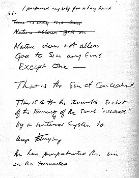
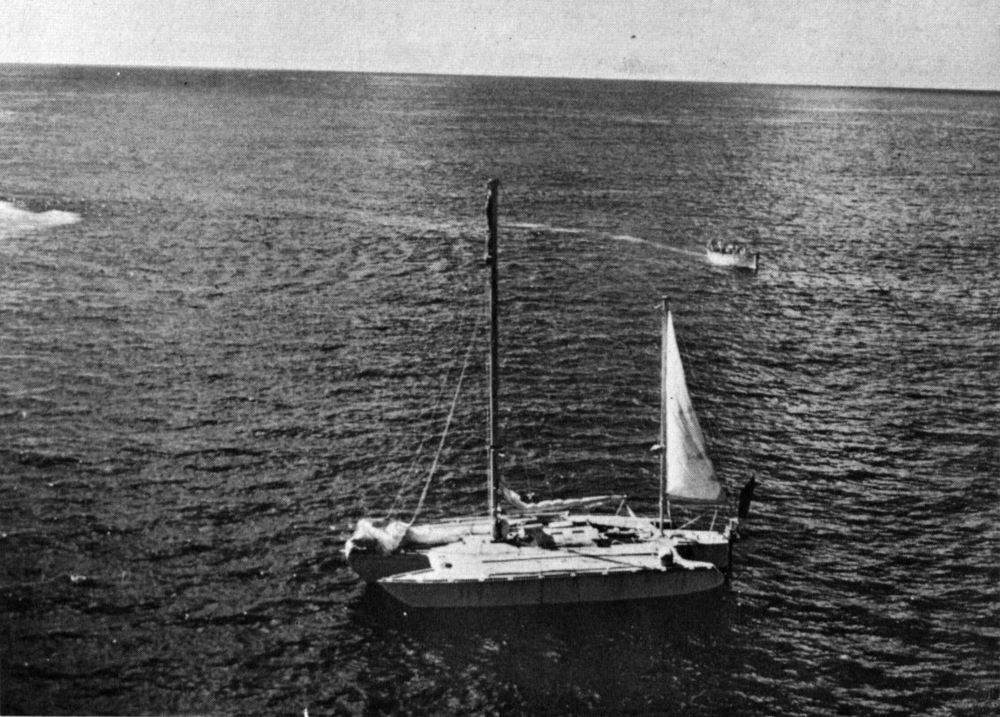
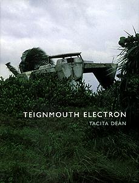
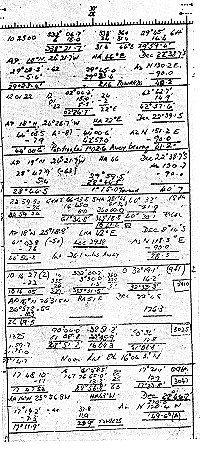

Fils d'un représentant des chemins de fer expatrié, Crowhurst naît en Inde en 1932. En
1947 il arrive avec sa famille en Angleterre. Il rejoint la RAF, apprend à piloter,
et étudie l'ingéniérie électronique, mais est renvoyé pour manque de discipline. Il intègre rapidement l'Armée où il
suit une formation en armement électronique. Là encore sa carrière militaire ne dure pas longtemps, après avoir volé
une voiture pour rentrer à son arrestation par la police.
En 1957 il obtient un boulot avec Mullard, mais laisse rapidement tomber et achète un bateau de 20 pieds — Pot of
Gold — qu'il conserve près de Bridgwater, lançant la firme Electron
Utilisation pour commercialiser son invention, un appareil de navigation - le "Navicator".
Il a un accident motorisé qui le blesse à la tête. Par la suite son caractère semble affecté et il tombe dans de
grandes dépressions.
Stanley Best, un homme d'affaires de Taunton, amène une partie des fonds pour cette
enterprise, mais s'aperçoit bientôt que bien que correct d'un point de vue pratique, Crowhurst n'a pas sens de la
finance ou des affaires.
En 1966/1967 Francis Chichester effectue son premier tour du monde en solitaire. Cela devient immédiatement une
ambition pour Crowhurst de faire la même chose.
Le Sunday Times décide de sponsoriser la course autour du monde en solitaire et sans escale du Golden
Globe, une laquelle les compétiteurs pourraient démarrer à tout moment entre le
et le , d'où ils le souhaitent, n'ayant
besoin pour participer officiellement que de faire enregistrer leurs dates de départ et d'arrivée par un journal
national. Deux prix sont offerts — un pour le temps le plus court et un pour le premier arrivé.
Y participent 9 concurrents dont Moitessier, Knox-Johnston. Navigateur expérimenté, Crowhurst annonce en
qu'il participera sur un trimaran. Il parle à Best de financer la construction
du bateau, le convainquant des profits pour la société s'il gagne.
Son attaché de presse, Rodney Hallworth, ancien du Mail et de l'Express, pense que Crowhurst
devrait partir de Teignmouth. La BBC achète les droits TV et audio et fournit une
caméra et un enregistreur pour le voyage. La bateau — baptisé "Teignmouth Electron" — arrive dans la ville 16
jours avant la date limite.
Un matin d' , des amis de Crowhurst et un cameraman de la BBC le voient partir du
port de Teignmouth sur son trimaran, partant pour la course du Golden Globe, en solitaire, sans escale,
autour du monde, avec laquelle vont commencer les étranges événements entourant cet extraordinaire voyage.
Pendant une quinzaine de jours, aucun message n'est reçu. Puis un finit par arriver de quelque part près de
Madère. Peu après il déclare avoir effectué un record en naviguant 243 miles en un jour. La presse pense à un
possible vainqueur.
Nombreux sont parmi les favoris, dont Chay Blyth et John Ridgeway, a avoir déjà abandonné, mais Crowhurst semble
faire de bons temps. Robin Knox-Johnson à 'Suhaili' est au large de la Nouvelle-Zélande, son bateau sévèrement
touché, mais réduisant l'écart. Nigel Tetley, aussi sur trimaran, approche du Cap. L'idée de Crowhurst vainqueur
est en tête.
Cependant Crowhurst a trop besoin de gagner la course pour risquer un échec. C'est sans doute ce qui lui donne
l'idée de monter un canular qui va longtemps abuser la presse : il navigue jusqu'aux
Açores, à 700 miles à l'Ouest, par 35° de latitude, et y reste sans bouger de façon
appréciable. Il envoie à la BBC anglaise des messages radio où il donne des points fantaisistes tels que : je
franchis le cap Horn... le cap de Bonne-Espérance... je retourne en Angleterre...
Le , Crowhurst reçoit un message du Sunday Time : Rencontre prévue
aux îles Sorlingues... B.B.C. prépare interview... récit exclusif pour les Journaux... éditeurs intéressés...
arrivée triomphale prévue... Le bateau devant lui — le "Victress" de Nigel Tetley — a coulé et il semble que
Crowhurst soit certain de gagner les 5000 £ pour le tour du monde le plus rapide. De son côté, Robin
Knox-Johnson a déjà gagné les 5000 £ comme premier concurrent de retour chez lui.
Peut-être à ce moment Crowhurst réalise-t-il qu'il n'est pas en si bonne posture que çà. Le prix est à lui, il
est déjà un héros attendu, mais cela signifie que ses journaux de bord font faire l'objet d'une inspection
détaillée, révélant ainsi son canular. Tant que Tetley était devant, Crowhurst était second mais toujours un
héros, et surtout aucune vérification n'aurait été faite de ses journaux de bord...
Toujours est-il qu'à partir de cette date, tout bascule. Crowhurst ne répond plus aux messages, et confie la
vérité à son journal. Il avoue que son trimaran n'a pas bougé du 35° parallèle, mais il ajoute des commentaires
étranges. A partir de ce , il laisse un long testament philosophique dans un 2nd
journal de bord. Chaque mot a une suprême importance : il s'agit d'un message qu'il a à révéler à l'humanité, et
il n'a que 7 jours pour l'écrire.
Pourquoi 7 jours ? On peut effectivement trouver étrange qu'un homme, en plein Atlantique et donc sans
contraintes, qui aurait décidé de se supprimer, se donne un délai de 7 jours pour rédiger un long testament
philosophique dont il ne connaît certes pas à l'avance le temps qu'il lui faudra pour l'écrire. Ensuite, quel
est ce mystérieux testament dont nous ne connaîtrons que des bribes ?
Toujours est il que Crowhurst écrit, parle de Dieu et du système d'un monde où un cerveau cosmique se joue
de lui :
Vous ne serez peut-être pas d'accord avec certaines choses que j'ai à vous dire...
(...) Il semble que le progrès est la pièce qui a le plus de valeur pour l'humanité... Le progrès vers quoi ?
Eh bien, vers l'intégration cosmique, bien sûr, où croyez-vous que nous puissions aller ailleurs ? Comment
je le sais ? Je vais vous le dire...
(...) Dieu et son fils jouaient ensemble au sein du cosmos. Il était le Père dans toute sa perfection et il
avait un fils parfait. Bien entendu, ils jouaient à un très bon jeu qui consiste à changer des singes en
dieux. Ce n'était rien qu'un excellent jeu, et aussi longtemps qu'on le jouait en suivant une règle simple,
les singes n'étaient pas autorisés à savoir quoi que ce fût à propos des dieux... Le jeu consistait...
Non seulement nous ne saurons pas de quoi il s'agissait, mais Crowhurst commence à faire preuve d'une tranquille
connaissance, exposée sans ostentation, et faisant étalage de révélations qu'il aurait acquises soudainement.
Par quoi, par qui ? Nous l'ignorons, comme le veulent les enquêteurs. Mais sans doute est-ce par ce mystérieux
phénomène qui provoqua en même temps les 5 disparitions de passagers à bord de leurs navires dans les mêmes
parages.
Encore Crowhurst :
Si votre système ne vous écoute pas, ce n'est pas une raison pour rentrer chez vous et y entreprendre la
fabrication d'un bombe - vous pouvez être certain que le système saura s'en arranger. Ne vous suicidez pas
par le feu au coin d'une rue. Le système ne sait peut-être pas s'en arranger, mais vous pouvez être certain
qu'il ne changera rien et votre intelligence aura été perdue (une intelligence assez forte pour accepter un
tel sacrifice mérite mieux). Il vous reste le choix de vous rendre au travail et de persuader le système de
vous accepter, puis de le changer de l'intérieur ou, simplement, de transporter votre intelligence à un
système plus satisfaisant.
Ce passage sera qualifié par des enquêteurs comme une Une argumentation quelque peu sophistiquée contre les
formes de révolution violente, mais surtout une rationalisation du propre désir de Crowhurst de transporter son
intelligence dans un système plus satisfaisant, celui de la pure intelligence. En d'autres termes, de
mourir... Ailleurs - mais dans quel contexte ? - Crowhurst déclare que le cours de l'âge est une forme du
concept de désespoir et cela devient pour nos compères l'illustration du tic-tac de son chronomètre qui le
rapprochait de la fin, de son suicide.
A un moment donné que l'on ne sait préciser, Crowhurst remet ses montres en marche comme s'il les avait
abandonnées pendant un certain temps. Les enquêteurs voient là le symptôme évident de la schizophrénie.
Mais, si nous admettons cette éventualité, que resort-il exactement des déclarations manuscrites du navigateur ?
Les raisons des troubles que nous ressentons est que les êtres cosmiques jouent à des jeux avec nous (si vous
connaissez les "vraies" mathématiques, il vous sera facile de me suivre). Ils s'amusent à imaginer des
systèmes capables de fabriquer des êtres cosmiques par eux-mêmes. Lorsque vous y réfléchissez, vous êtes
obligé de convenir que c'est là un jeu très amusant. J'aime les jeux amusants, et je suis parfaitement le
point de vue des êtres cosmiques. Mais, en même temps, je suis un homme et lorsque je réfléchis à la somme
de souffrance que les hommes ont endurée du fait de ce jeu des êtres cosmiques, je me sens plein de colère à
leur endroit. Ils me disent qu'ils comprennent cette douleur. Ils souffrent aussi d'ailleurs à leur façon,
et ont mis au point une méthode susceptible de fabriquer automatiquement les êtres cosmiques de façon à
faire une seconde génération plus à même de dominer ses problèmes qu'ils ne l'étaient eux-mêmes.
Bien sûr, retirées de leur contexte, ces phrases peuvent paraître obscures. Il ne faut pas oublier qu'elles sont
l'infime extrait de méditations de 25000 mots. Il semble que Crowhurst dialogue plus qu'il ne médite. Mais cette
allusion aux êtres cosmiques laisse supposer que le dialogue a atteint une ampleur difficile à concevoir
pour des esprits cartésiens. Si l'on estime que Crowhurst n'était plus seul, tout s'explique, encore qu'il
faille accepter la nature de ses interlocuteurs. Les enquêteurs, quant à eux, ont aussitôt profité de la
signification obscure de ces phrases, au préalable retirées de leur contexte par mesure de prudence, pour les
présenter sous un angle favorable à leur thèse : fantasmagories, symptômes extrêmes de paranoïa ; il se trouvait
si proche des êtres cosmiques qu'il leur parlait directement : Vous auriez pu rendre les choses plus
faciles.
 "La Nature..."
Là où le dialogue prend une tournure vraiment intrigante, c'est lorsque Crowhurst donne l'impression très nette
d'avoir discuté avec une autre personne :
J'ai des ennuis avec les êtres cosmiques. Il y avait quelque chose qui n'allait pas. Je sentais que j'aurais
pu jouer le jeu mieux qu'eux... A la fin, je fus obligé de reconnaître que la nature conduit ces êtres
cosmiques à commettre la seule faute dont ils soient capables : le péché de dissimulation. Ce n'est qu'une
petite faute pour un homme, mais elle devient terrible de la part d'un être cosmique. C'est là que réside
son angoisse.
Crowhurst semble, en effet, revenir d'une discussion avec plusieurs personnes avec lesquelles il est entré en
désaccord et dont la nature ne nous est connue que par ce vocable : les êtres cosmiques.
Crowhurst écrira également :
Maintenant, enfin, l'homme a tout ce dont il a besoin pour penser comme un être cosmique. Pour le moment, il
doit être vrai que je suis le seul homme sur la Terre à comprendre ce que cela veut dire.
Bien d'autres passages demeurent passionnants, mais, situés dans l'amputation d'un bref passage à travers 25000
mots, arrangés à une sauce douteuse, ils ne peuvent être sérieusement pris en considération ou, tout au moins,
étudiés avec l'intérêt qu'ils méritent. Les enquêteurs ont, d'autre part, trop appuyé sur leur thèse pour
demeurer objectifs, trouvant démentiel qu'un navigateur solitaire se promène nu sur le pont de son navire en
plein Atlantique, veuille étudier la critique qu'il a faite de la Relativité
d'Einstein, sinon déclare nécessaire le contrôle des
naissances...
Mais quel est cet objet sphérique rouillé, aux 2/3 submergé, que le navigateur aperçut à 4 encablures de lui, ou
ce curieux radeau d'environ 4 pieds carrés à peine submergé par 2 flotteurs sphériques de chaque côté format ce
qui semble être des poignées, sinon ces lueurs et ces choses étranges au-dessus de Rio de Janeiro
?
 Le trimaran
de Crowhurst qui fut découvert vide
Le , le paquebot Royal Mail Picardy, en route de Londres aux Antilles,
repère à un trimaran avançant lentement, à 1800 miles dans l'Atlantique. Le
capitaine du Picardy, Richard Box, trouve la position du trimaran étrange et décide d'y aller voir de plus près.
Le trimaran est à sec de toile, exception faite d'une petite voile d'artimon. On sonne la corne de brume mais
aucune réponse. Le bateau apparaît en bon état, sans avaries, mais personne n'est à bord. Le canot de sauvetage
est en place. On trouve des assiettes sales dans l'évier.
Cependant les récepteurs radios sont en pièces. Il ne manque que quelques objets, dont le chronomètre. Les
journaux de bord de Crowhurst sont en pile sur la table. La dernière note date du .
Le trimaran de Crowhurst sur l'île de Cayman Brac, photographié par Tacita Dean

Avec une grue le bateau est hissé à bord du Picardy, qui le transporte jusqu'à la petite île de Cayman Brac, où
il se trouve toujours (l'artiste Tacita Dean ira à Cayman Brac à l'automne 1998 pour tourner Disparition en
mer).
Alors que l'on s'apprêtait à accueillir le vainqueur de la course l'occupant du trimaran, Teignmouth
Electron, celui-ci a disparu. Knox-Johnson, vainqueur, insiste pour donner le prix de 5000 £ pour le fond
d'appel pour la famille de Crowhurst. Nigel Tetley, qui a pratiquement ruiné son bateau et est contraint à
l'abandon, reçoit une consolation de 1000 £. Il se suicidera quelques mois après.
Rodney Hallworth arrive en avion pour récupérer les journaux de bord, qu'il a déjà vendus au Sunday
Times pour 4000 £, mais est averti par la capitaine Box que quelque chose ne va pas. Ce dernier suggère de
déchirer des pages de la "confession" de Crowhurst afin que sa famille ne connaisse jamais l'"horrible vérité"
mais la découverte est telle que Hallworth pense que la totalité doit être publiée. La BBC prepare déjà L'histoire
du voyage héroïque de Crowhurst. Seul le directeur général connait la raison de ce programme.
La "supercherie" est qu'il existe deux ensembles de journaux de bord. Crowhurst n'a jamais passé le Cap Horn
ou le Cap de Bonne Espérance. Il a passé les 8 mois 1/2 à envoyer de faux messages radio et de fausses
positions de l'Atlantique. Dans un ouvrage volumineux, les enquêteurs indiqueront :
Son itinéraire a été falsifié. Il inventait des positions imaginaires pour faire croire à une progression
rapide. L'inquiétude que lui procurait l'état alarmant de son trimaran explique les contradictions de
ses messages et, devant la tricherie dont il s'était fait l'auteur, commençait à prévoir une solution
qui laissât vierge sa mémoire devant la postérité : le suicide. Crowhurst se jeta à la mer pour ne pas
affronter le jugement des hommes - et quel jugement ! - en emportant le compas et divers objets.
 Navigation
On découvre en effet dans le 2ème livre de bord un itinéraire qui se rapproche bien peu de celui dont le
navigateur a énoncé les étapes par radio. A-il voulu mystifier tout le monde et, à cause des défaillances
techniques de son trimaran, faire croire à une progression constante et rapide ? Alors, ce livre de bord
contient l'itinéraire réel de Crowhurst et démontre sa tricherie. Le navigateur s'est tenu au courant, par
radio bien sûr, des conditions météorologiques sévissant dans des secteurs voisinant sa route. Ainsi, il
voulait faire croire ce qui n'était point. C'est cette imposture qui l'aurait conduit tout au long à un
assaut de scrupules, de doutes, de craintes qu'on ne le découvre là où il ne pouvait pas être, etc.
Cependant la carte dressée d'après ce livre présente un itinéraire en zigzag qu'aucun navigateur n'aurait
suivi, même en voulant mystifier. Les enquêteurs supposent alors que, durant tout le voyage, il existait un
4ème livre, celui-là complètement faux, et prouvant indubitablement cette tricherie. Crowhurst l'aurait jeté
par-dessus bord avant de suivre le même chemin.
Un autre livre, contenant près de 25000 mots de "méditations", est lu et analysé par divers psychologues
sollicités. Ceux-ci indiquent qu'elles n'ont pu être écrites par une personne en bonne santé mentale,
cherchant à mystifier. L'un d'eux suggère : Ce serait très difficile d'écrire 25000 mots d'un tel
texte. Essayez plutôt. On pense alors que Crowhurst a dû devenir fou pour écrire si longuement et
d'une façon si inégalable. Il fallait qu'il soit devenu fou, car certaines de ses déclarations paraissent
incompréhensibles : vers la fin de la course, probablement en approchant des Açores, ses affirmations
manuscrites prennent un sens hors du commun. Que s'est-il donc passé ? A-t-il sombré peu à peu dans le
délire ? Pour quel motif ? Quel choc soudain avait perturbé le cours de ses pensées, de ses réflexions ? Les
enquêteurs font des suppositions :
Ce qui précipita la folie de Crowhurst, nous ne le savons pas. La drogue ou l'alcool ? Un défaut de
vitamines ou le thé moisi... ? Plus probablement, il aura été écrasé par les pressions accumulées de la
situation cauchemaresque dans laquelle il se trouvait...
Cette interprétation des médiations de Crowhurst semble malhonnête à certains. Comme le diront François
Ribaud et Jean-Claude Ribes à propos du travail des
enquêteurs :
Il comporte le talent de ne rien dire qui soit faux, à proprement parler, mais de faire des citations
tout en déformant la pensée de l'auteur, de séparer d'un contexte gênant une phrase ambiguë, d'omettre
les développements ou les préambules.
Les derniers mots de
Crowhurst
Certains y trouvent trop de peut-être... nous croyons que... à en juger par... si
nous acceptions que... nous pouvons interpréter... N'ayant accès aux documents, le lecteur n'a
d'autre choix que d'accepter l'interprétation des enquêteurs : Crowhurst a sombré dans la mégalomanie
paranoïde.
Pourtant, après que ces pages aient été déchirées, à l'occasion sans doute d'un moment plus favorable, on en
donna publiquement lecture. S'agissait-il des mêmes pages ? Rien ne le prouve.
Est-il resté de son plein gré dans la zone des Açores ? Le , Crowhurst écrit qu'il est
décidé à mourir : Mon âme désormais est en repos. Je vous livre mon carnet de bord. La seule beauté est
la vérité, personne ne doit et ne peut faire plus qu'il ne lui est possible. C'est la fin, la vérité est
révélée, j'abandonne mon jeu .
Pour Craig Rich, consultant en navigation pour le Sunday Times, il n'y a pas de grand mystère dans
cette histoire : Crowhurst a simplement falsifié ses enregistrements pour faire croire qu'il avait effectué
toute la course, et pensant arriver 2nd. Il a pu tomber ou se jeter à l'eau, mais quoi que l'on puisse en
penser, il fait preuve de courage en naviguant 16 000 miles en solitaire, une action remarquable en
elle-même.
Certains diront avoir reconnu Crowhurst vivant en Angleterre, mais le mystère demeure toujours sur sa disparition.
Références :
Nicholas Tomalin, Ron Hall et Robin Knox-Johnston, The strange last voyage of Donald Crowhurst, International
Marine 1970, ISBN 0-07-065084-5
traduit L'étrange voyage de Donald Crowhurst, Stock, octobre 1990, ISBN 223402272X, EAN13
9782234022720.
Gaston, Patrice, Disparitions mystérieuses, Robert Laffont 1973 / Les énigmes de l'univers, pp. 181 et
suivantes — Une mine d'histoires peu connues de disparitions mystérieuses au cours des 2 derniers siècles.
De Chalonge, Christian, Les 40èmes rugissants, 1982, avec Jacques Perrin, Michel Serrault.